设计模式是解决特定问题的一系列套路，有一定的普遍性;是一套被反复使用、多数人知晓的、代码设计经验的总结。它可以提高代码的可重用性、代码的可读性和代码的可靠性以及可扩展性。
常用的设计模式有23种，5种创建型模式 (Creational Pattern)（下表中的简单工厂模式一般不算在内），7种结构型模式 (Structural Pattern)，11种行为型模式 (Behavioral Pattern)
| 模式名称 | 学习难度 | 使用频率 |
|---|---|---|
| 单例模式 Singleton Pattern | ⭐☆☆☆☆ | ⭐⭐⭐⭐☆ |
| 简单工厂模式 Simple Factory Pattern | ⭐⭐☆☆☆ | ⭐⭐⭐☆☆ |
| 工厂方法模式 Factory Method Pattern | ⭐⭐☆☆☆ | ⭐⭐⭐⭐⭐ |
| 抽象工厂模式 Abstract Factory Pattern | ⭐⭐⭐⭐☆ | ⭐⭐⭐⭐⭐ |
| 原型模式 Prototype Pattern | ⭐⭐⭐☆☆ | ⭐⭐⭐☆☆ |
| 建造者模式 Builder Pattern | ⭐⭐⭐⭐☆ | ⭐⭐☆☆☆ |
| 模式名称 | 学习难度 | 使用频率 |
|---|---|---|
| 适配器模式 Adapter Pattern | ⭐⭐☆☆☆ | ⭐⭐⭐⭐☆ |
| 桥接模式 Bridge Pattern | ⭐⭐⭐☆☆ | ⭐⭐⭐☆☆ |
| 组合模式 Composite Pattern | ⭐⭐⭐☆☆ | ⭐⭐⭐⭐☆ |
| 装饰模式 Decorator Pattern | ⭐⭐⭐☆☆ | ⭐⭐⭐☆☆ |
| 外观模式 Facade Pattern | ⭐☆☆☆☆ | ⭐⭐⭐⭐⭐ |
| 享元模式 Flyweight Pattern | ⭐⭐⭐⭐☆ | ⭐☆☆☆☆ |
| 代理模式 Proxy Pattern | ⭐⭐⭐☆☆ | ⭐⭐⭐⭐☆ |
| 模式名称 | 学习难度 | 使用频率 |
|---|---|---|
| 职责链模式 Chain of Responsibility Pattern | ⭐⭐⭐☆☆ | ⭐⭐☆☆☆ |
| 命令模式 Command Pattern | ⭐⭐⭐☆☆ | ⭐⭐⭐⭐☆ |
| 解释器模式 Interpreter Pattern | ⭐⭐⭐⭐⭐ | ⭐☆☆☆☆ |
| 迭代器模式 Iterator Pattern | ⭐⭐⭐☆☆ | ⭐⭐⭐⭐⭐ |
| 中介者模式 Mediator Pattern | ⭐⭐⭐☆☆ | ⭐⭐☆☆☆ |
| 备忘录模式 Memento Pattern | ⭐⭐☆☆☆ | ⭐⭐☆☆☆ |
| 观察者模式 Observer Pattern | ⭐⭐⭐☆☆ | ⭐⭐⭐⭐⭐ |
| 状态模式 State Pattern | ⭐⭐⭐☆☆ | ⭐⭐⭐☆☆ |
| 策略模式 Strategy Pattern | ⭐☆☆☆☆ | ⭐⭐⭐⭐☆ |
| 模板方法模式 Template Method Pattern | ⭐⭐☆☆☆ | ⭐⭐⭐☆☆ |
| 访问者模式 Visitor Pattern | ⭐⭐⭐⭐☆ | ⭐☆☆☆☆ |
简单工厂模式是创建型设计模式的一种，它提供了一个创建对象的接口，但不暴露对象的创建逻辑。客户端通过一个公共的接口来创建所需的对象，而不需要知道具体的创建过程。
核心思想
封装对象创建过程：将对象的创建逻辑集中在一个工厂类中
降低耦合度：客户端不直接依赖具体的产品类
统一创建接口：通过工厂方法统一创建不同类型的对象
简化客户端代码：客户端只需要知道产品的标识，不需要了解创建细节
结构组成
抽象产品 (Abstract Product)：定义产品的公共接口
具体产品 (Concrete Product)：实现抽象产品接口的具体类
简单工厂 (Simple Factory)：负责创建具体产品对象的工厂类
客户端 (Client)：使用工厂创建产品对象
xxxxxxxxxx651
5// 抽象产品：形状接口6class Shape {7public:8 virtual void draw() = 0;9 virtual ~Shape() = default;10};11
12// 具体产品：圆形13class Circle : public Shape {14public:15 void draw() override {16 std::cout << "绘制圆形" << std::endl;17 }18};19
20// 具体产品：矩形21class Rectangle : public Shape {22public:23 void draw() override {24 std::cout << "绘制矩形" << std::endl;25 }26};27
28// 具体产品：三角形29class Triangle : public Shape {30public:31 void draw() override {32 std::cout << "绘制三角形" << std::endl;33 }34};35
36// 简单工厂类37class ShapeFactory {38public:39 static std::unique_ptr<Shape> createShape(const std::string& shapeType) {40 if (shapeType == "Circle") {41 return std::make_unique<Circle>();42 } else if (shapeType == "Rectangle") {43 return std::make_unique<Rectangle>();44 } else if (shapeType == "Triangle") {45 return std::make_unique<Triangle>();46 } else {47 return nullptr;48 }49 }50};51
52// 客户端使用53int main() {54 // 创建不同类型的形状55 auto circle = ShapeFactory::createShape("Circle");56 auto rectangle = ShapeFactory::createShape("Rectangle");57 auto triangle = ShapeFactory::createShape("Triangle");58 59 // 使用创建的对象60 if (circle) circle->draw();61 if (rectangle) rectangle->draw();62 if (triangle) triangle->draw();63 64 return 0;65}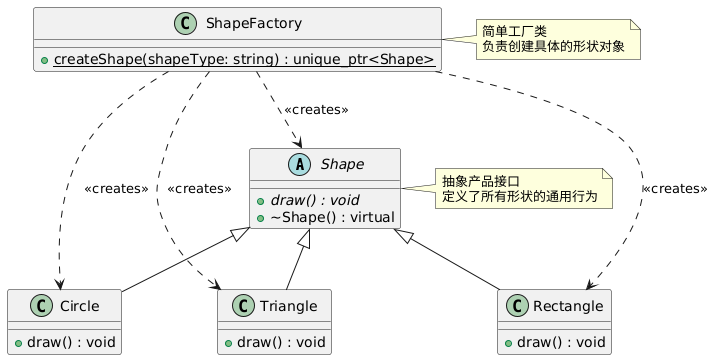
xxxxxxxxxx311class DatabaseConnection {2public:3 virtual void connect() = 0;4 virtual ~DatabaseConnection() = default;5};6
7class MySQLConnection : public DatabaseConnection {8public:9 void connect() override {10 std::cout << "连接到 MySQL 数据库" << std::endl;11 }12};13
14class PostgreSQLConnection : public DatabaseConnection {15public:16 void connect() override {17 std::cout << "连接到 PostgreSQL 数据库" << std::endl;18 }19};20
21class DatabaseFactory {22public:23 static std::unique_ptr<DatabaseConnection> createConnection(const std::string& dbType) {24 if (dbType == "MySQL") {25 return std::make_unique<MySQLConnection>();26 } else if (dbType == "PostgreSQL") {27 return std::make_unique<PostgreSQLConnection>();28 }29 return nullptr;30 }31};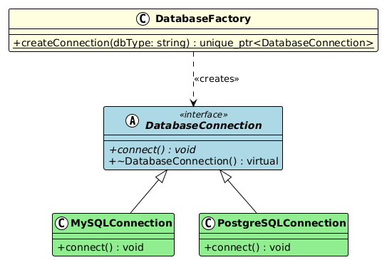
xxxxxxxxxx311class Logger {2public:3 virtual void log(const std::string& message) = 0;4 virtual ~Logger() = default;5};6
7class FileLogger : public Logger {8public:9 void log(const std::string& message) override {10 std::cout << "[文件日志] " << message << std::endl;11 }12};13
14class ConsoleLogger : public Logger {15public:16 void log(const std::string& message) override {17 std::cout << "[控制台日志] " << message << std::endl;18 }19};20
21class LoggerFactory {22public:23 static std::unique_ptr<Logger> createLogger(const std::string& loggerType) {24 if (loggerType == "file") {25 return std::make_unique<FileLogger>();26 } else if (loggerType == "console") {27 return std::make_unique<ConsoleLogger>();28 }29 return nullptr;30 }31};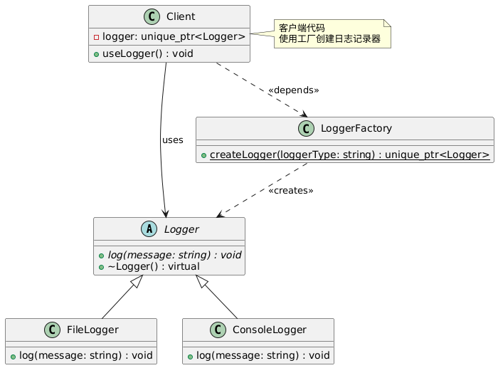
优点：
1、工厂类包含必要的判断逻辑，可以决定在什么时候创建哪一个产品类的实例，客户端可以免除直接创建产品对象的职责，而仅仅“消费”产品，简单工厂模式实现了对象创建和使用的分离
2、客户端无须知道所创建的具体产品类的类名，只需要知道具体产品类所对应的参数即可，对于一些复杂的类名，通过简单工厂模式可以在一定程度减少使用者的记忆量
3、通过引入配置文件，可以在不修改任何客户端代码的情况下更换和增加新的具体产品类，在一定程度上提高了系统的灵活性。
总结：可以根据产品的名字生产出对应的产品
缺点：
1、由于工厂类集中了所有产品的创建逻辑，职责过重，一旦不能正常工作，整个系统都要受到影响；
2、使用简单工厂模式势必会增加系统中类的个数（引入新的工程类），增加了系统的复杂度和理解难度；(比如，如果想要创建梯形、椭圆形之类的图形，还需要改动Factory的代码)
3、系统拓展困难，一旦添加了新的产品就不得不修改工厂逻辑，在产品类型较多时，有可能造成工厂逻辑过于复杂，不利于系统的拓展和维护
4、简单工厂模式由于使用了静态工厂方法，造成工厂角色无法形成基于继承的等级结构
总结：违反了单一职责原则、违反了开放闭合原则、违反了依赖倒置原则
产品类型相对固定：当需要创建的对象类型不会频繁变化时
客户端不关心创建过程：只需要获得产品对象，不关心如何创建
创建逻辑相对简单：不涉及复杂的创建过程
需要统一管理对象创建：希望将创建逻辑集中管理
简单工厂模式是最基础的工厂模式，它通过一个工厂类来创建不同类型的产品对象。虽然它违反了开闭原则，但在产品类型相对固定的场景下，简单工厂模式能够有效地封装对象创建逻辑，降低客户端与具体产品类之间的耦合度。在实际开发中，简单工厂模式常用于创建配置对象、数据库连接、日志记录器等场景。
工厂方法模式是创建型设计模式的一种，它定义了一个创建对象的接口，但让子类决定实例化哪一个类。工厂方法让类的实例化推迟到子类中进行，从而实现了创建者和具体产品的解耦。
核心思想
延迟实例化：将对象的创建延迟到子类中决定
遵循开闭原则：对扩展开放，对修改关闭
单一职责：每个工厂类只负责创建一种产品
依赖倒置：依赖抽象而不是具体实现
结构组成
抽象产品 (Abstract Product)：定义产品的公共接口
具体产品 (Concrete Product)：实现抽象产品接口的具体类
抽象工厂 (Abstract Factory)：声明工厂方法，返回抽象产品类型
具体工厂 (Concrete Factory)：实现工厂方法，返回具体产品实例
客户端 (Client)：使用抽象工厂和抽象产品
xxxxxxxxxx1031
5// 抽象产品：交通工具6class Vehicle {7public:8 virtual void start() = 0;9 virtual void stop() = 0;10 virtual ~Vehicle() = default;11};12
13// 具体产品：汽车14class Car : public Vehicle {15public:16 void start() override {17 std::cout << "汽车启动：点火，挂档，踩油门" << std::endl;18 }19 20 void stop() override {21 std::cout << "汽车停止：踩刹车，拉手刹" << std::endl;22 }23};24
25// 具体产品：自行车26class Bicycle : public Vehicle {27public:28 void start() override {29 std::cout << "自行车启动：踩踏板" << std::endl;30 }31 32 void stop() override {33 std::cout << "自行车停止：捏刹车" << std::endl;34 }35};36
37// 具体产品：飞机38class Airplane : public Vehicle {39public:40 void start() override {41 std::cout << "飞机启动：启动引擎，滑行起飞" << std::endl;42 }43 44 void stop() override {45 std::cout << "飞机停止：降落，关闭引擎" << std::endl;46 }47};48
49// 抽象工厂：交通工具工厂50class VehicleFactory {51public:52 virtual std::unique_ptr<Vehicle> createVehicle() = 0;53 virtual ~VehicleFactory() = default;54 55 // 模板方法：定义使用流程56 void useVehicle() {57 auto vehicle = createVehicle();58 vehicle->start();59 std::cout << "正在使用交通工具..." << std::endl;60 vehicle->stop();61 }62};63
64// 具体工厂：汽车工厂65class CarFactory : public VehicleFactory {66public:67 std::unique_ptr<Vehicle> createVehicle() override {68 return std::make_unique<Car>();69 }70};71
72// 具体工厂：自行车工厂73class BicycleFactory : public VehicleFactory {74public:75 std::unique_ptr<Vehicle> createVehicle() override {76 return std::make_unique<Bicycle>();77 }78};79
80// 具体工厂：飞机工厂81class AirplaneFactory : public VehicleFactory {82public:83 std::unique_ptr<Vehicle> createVehicle() override {84 return std::make_unique<Airplane>();85 }86};87
88// 客户端使用89int main() {90 // 创建不同的工厂91 std::vector<std::unique_ptr<VehicleFactory>> factories;92 factories.push_back(std::make_unique<CarFactory>());93 factories.push_back(std::make_unique<BicycleFactory>());94 factories.push_back(std::make_unique<AirplaneFactory>());95 96 // 使用工厂创建和使用交通工具97 for (auto& factory : factories) {98 factory->useVehicle();99 std::cout << "-------------------" << std::endl;100 }101 102 return 0;103}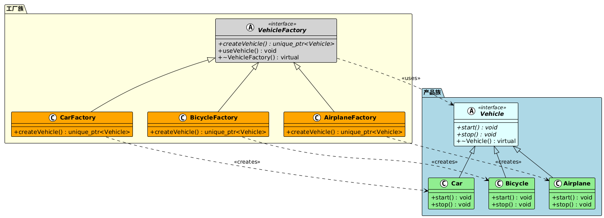
xxxxxxxxxx631// 抽象产品：数据库连接2class DatabaseConnection {3public:4 virtual void connect() = 0;5 virtual void executeQuery(const std::string& sql) = 0;6 virtual void disconnect() = 0;7 virtual ~DatabaseConnection() = default;8};9
10// 具体产品：MySQL连接11class MySQLConnection : public DatabaseConnection {12public:13 void connect() override {14 std::cout << "连接到MySQL数据库" << std::endl;15 }16 17 void executeQuery(const std::string& sql) override {18 std::cout << "在MySQL中执行: " << sql << std::endl;19 }20 21 void disconnect() override {22 std::cout << "断开MySQL连接" << std::endl;23 }24};25
26// 具体产品：PostgreSQL连接27class PostgreSQLConnection : public DatabaseConnection {28public:29 void connect() override {30 std::cout << "连接到PostgreSQL数据库" << std::endl;31 }32 33 void executeQuery(const std::string& sql) override {34 std::cout << "在PostgreSQL中执行: " << sql << std::endl;35 }36 37 void disconnect() override {38 std::cout << "断开PostgreSQL连接" << std::endl;39 }40};41
42// 抽象工厂：数据库工厂43class DatabaseFactory {44public:45 virtual std::unique_ptr<DatabaseConnection> createConnection() = 0;46 virtual ~DatabaseFactory() = default;47};48
49// 具体工厂：MySQL工厂50class MySQLFactory : public DatabaseFactory {51public:52 std::unique_ptr<DatabaseConnection> createConnection() override {53 return std::make_unique<MySQLConnection>();54 }55};56
57// 具体工厂：PostgreSQL工厂58class PostgreSQLFactory : public DatabaseFactory {59public:60 std::unique_ptr<DatabaseConnection> createConnection() override {61 return std::make_unique<PostgreSQLConnection>();62 }63};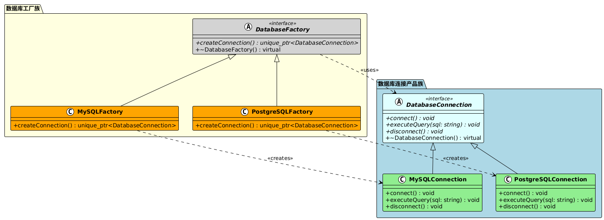
xxxxxxxxxx591// 抽象产品：日志记录器2class Logger {3public:4 virtual void log(const std::string& message) = 0;5 virtual ~Logger() = default;6};7
8// 具体产品：文件日志记录器9class FileLogger : public Logger {10public:11 void log(const std::string& message) override {12 std::cout << "[文件日志] " << message << std::endl;13 }14};15
16// 具体产品：控制台日志记录器17class ConsoleLogger : public Logger {18public:19 void log(const std::string& message) override {20 std::cout << "[控制台日志] " << message << std::endl;21 }22};23
24// 具体产品：网络日志记录器25class NetworkLogger : public Logger {26public:27 void log(const std::string& message) override {28 std::cout << "[网络日志] " << message << std::endl;29 }30};31
32// 抽象工厂：日志工厂33class LoggerFactory {34public:35 virtual std::unique_ptr<Logger> createLogger() = 0;36 virtual ~LoggerFactory() = default;37};38
39// 具体工厂实现40class FileLoggerFactory : public LoggerFactory {41public:42 std::unique_ptr<Logger> createLogger() override {43 return std::make_unique<FileLogger>();44 }45};46
47class ConsoleLoggerFactory : public LoggerFactory {48public:49 std::unique_ptr<Logger> createLogger() override {50 return std::make_unique<ConsoleLogger>();51 }52};53
54class NetworkLoggerFactory : public LoggerFactory {55public:56 std::unique_ptr<Logger> createLogger() override {57 return std::make_unique<NetworkLogger>();58 }59};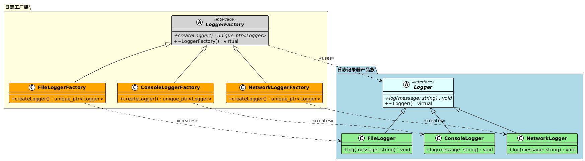
优点：
1、用户只需要知道具体工厂的名称就可得到所要的产品，无须知道产品的具体创建过程。
2、灵活性增强，对于新产品的创建，只需多写一个相应的工厂类。
3、典型的解耦框架。高层模块只需要知道产品的抽象类，无须关心其他实现类。
4、对扩展开放对修改关闭；解决了简单工厂的缺点问题。
总结：遵循了单一职责原则、开放闭合原则、遵循了依赖倒置原则。
缺点：
1、类的个数容易过多，增加复杂度
2、增加了系统的抽象性和理解难度
3、接口的传入参数类型需要一致，且只能对单一变化量接口使用
4、抽象产品只能生产一种产品，此弊端可使用抽象工厂模式解决。
总结：工厂的数量会随着产品的增加而急剧上升。
创建对象需要大量重复代码
客户端不依赖于产品类实例如何被创建、实现等细节
一个类通过其子类来指定创建哪个对象
需要为库或框架提供扩展点
| 特性 | 简单工厂模式 | 工厂方法模式 |
|---|---|---|
| 工厂数量 | 一个工厂类 | 多个工厂类（每个产品一个工厂） |
| 扩展性 | 违反开闭原则，需要修改工厂类 | 遵循开闭原则，只需添加新工厂类 |
| 复杂度 | 简单，适合产品种类少的情况 | 相对复杂，适合产品种类多的情况 |
| 职责分离 | 工厂类职责较重 | 每个工厂类职责单一 |
| 客户端依赖 | 依赖具体工厂类 | 依赖抽象工厂类 |
| 参数传递 | 通常需要参数来决定创建哪种产品 | 不需要参数，工厂类型决定产品类型 |
工厂方法模式是一种非常实用的创建型设计模式，它通过将对象的创建延迟到子类中，实现了创建者和产品的解耦。相比简单工厂模式，工厂方法模式更好地遵循了开闭原则和单一职责原则，使得系统更容易扩展和维护。在需要创建多种相关产品，且产品种类可能会增加的场景下，工厂方法模式是一个很好的选择。
抽象工厂模式是创建型设计模式的一种，它提供一个创建一系列相关或相互依赖对象的接口，而无需指定它们具体的类。抽象工厂模式也被称为Kit模式，它是工厂方法模式的进一步抽象和推广。
核心思想
产品族概念：创建一系列相关的产品对象
多个工厂方法：一个抽象工厂包含多个工厂方法
产品一致性：确保同一工厂创建的产品属于同一产品族
易于切换产品族：通过切换工厂来切换整个产品族
结构组成
抽象工厂 (Abstract Factory)：声明创建抽象产品对象的操作接口
具体工厂 (Concrete Factory)：实现创建具体产品对象的操作
抽象产品 (Abstract Product)：为一类产品对象声明接口
具体产品 (Concrete Product)：定义具体工厂创建的产品对象
客户端 (Client)：使用抽象工厂和抽象产品类声明的接口
产品族概念
产品族是指由同一个工厂生产的，位于不同产品等级结构中的一组产品。例如：
现代风格家具族：现代沙发 + 现代茶几 + 现代衣柜
古典风格家具族：古典沙发 + 古典茶几 + 古典衣柜
xxxxxxxxxx2491
4// 抽象产品A：按钮5class Button {6public:7 virtual void render() = 0;8 virtual void onClick() = 0;9 virtual ~Button() = default;10};11
12// 抽象产品B：文本框13class TextBox {14public:15 virtual void render() = 0;16 virtual void input(const std::string& text) = 0;17 virtual ~TextBox() = default;18};19
20// 抽象产品C：复选框21class CheckBox {22public:23 virtual void render() = 0;24 virtual void toggle() = 0;25 virtual ~CheckBox() = default;26};27
28// Windows风格的具体产品29class WindowsButton : public Button {30public:31 void render() override {32 std::cout << "渲染Windows风格按钮" << std::endl;33 }34 35 void onClick() override {36 std::cout << "Windows按钮被点击" << std::endl;37 }38};39
40class WindowsTextBox : public TextBox {41public:42 void render() override {43 std::cout << "渲染Windows风格文本框" << std::endl;44 }45 46 void input(const std::string& text) override {47 std::cout << "Windows文本框输入: " << text << std::endl;48 }49};50
51class WindowsCheckBox : public CheckBox {52public:53 void render() override {54 std::cout << "渲染Windows风格复选框" << std::endl;55 }56 57 void toggle() override {58 std::cout << "Windows复选框状态切换" << std::endl;59 }60};61
62// macOS风格的具体产品63class MacButton : public Button {64public:65 void render() override {66 std::cout << "渲染macOS风格按钮" << std::endl;67 }68 69 void onClick() override {70 std::cout << "macOS按钮被点击" << std::endl;71 }72};73
74class MacTextBox : public TextBox {75public:76 void render() override {77 std::cout << "渲染macOS风格文本框" << std::endl;78 }79 80 void input(const std::string& text) override {81 std::cout << "macOS文本框输入: " << text << std::endl;82 }83};84
85class MacCheckBox : public CheckBox {86public:87 void render() override {88 std::cout << "渲染macOS风格复选框" << std::endl;89 }90 91 void toggle() override {92 std::cout << "macOS复选框状态切换" << std::endl;93 }94};95
96// Linux风格的具体产品97class LinuxButton : public Button {98public:99 void render() override {100 std::cout << "渲染Linux风格按钮" << std::endl;101 }102 103 void onClick() override {104 std::cout << "Linux按钮被点击" << std::endl;105 }106};107
108class LinuxTextBox : public TextBox {109public:110 void render() override {111 std::cout << "渲染Linux风格文本框" << std::endl;112 }113 114 void input(const std::string& text) override {115 std::cout << "Linux文本框输入: " << text << std::endl;116 }117};118
119class LinuxCheckBox : public CheckBox {120public:121 void render() override {122 std::cout << "渲染Linux风格复选框" << std::endl;123 }124 125 void toggle() override {126 std::cout << "Linux复选框状态切换" << std::endl;127 }128};129
130// 抽象工厂131class GUIFactory {132public:133 virtual std::unique_ptr<Button> createButton() = 0;134 virtual std::unique_ptr<TextBox> createTextBox() = 0;135 virtual std::unique_ptr<CheckBox> createCheckBox() = 0;136 virtual ~GUIFactory() = default;137};138
139// 具体工厂：Windows工厂140class WindowsFactory : public GUIFactory {141public:142 std::unique_ptr<Button> createButton() override {143 return std::make_unique<WindowsButton>();144 }145 146 std::unique_ptr<TextBox> createTextBox() override {147 return std::make_unique<WindowsTextBox>();148 }149 150 std::unique_ptr<CheckBox> createCheckBox() override {151 return std::make_unique<WindowsCheckBox>();152 }153};154
155// 具体工厂：macOS工厂156class MacFactory : public GUIFactory {157public:158 std::unique_ptr<Button> createButton() override {159 return std::make_unique<MacButton>();160 }161 162 std::unique_ptr<TextBox> createTextBox() override {163 return std::make_unique<MacTextBox>();164 }165 166 std::unique_ptr<CheckBox> createCheckBox() override {167 return std::make_unique<MacCheckBox>();168 }169};170
171// 具体工厂：Linux工厂172class LinuxFactory : public GUIFactory {173public:174 std::unique_ptr<Button> createButton() override {175 return std::make_unique<LinuxButton>();176 }177 178 std::unique_ptr<TextBox> createTextBox() override {179 return std::make_unique<LinuxTextBox>();180 }181 182 std::unique_ptr<CheckBox> createCheckBox() override {183 return std::make_unique<LinuxCheckBox>();184 }185};186
187// 客户端应用程序188class Application {189public:190 Application(std::unique_ptr<GUIFactory> factory) 191 : factory_(std::move(factory)) {192 createUI();193 }194 195 void createUI() {196 button_ = factory_->createButton();197 textBox_ = factory_->createTextBox();198 checkBox_ = factory_->createCheckBox();199 }200 201 void renderUI() {202 button_->render();203 textBox_->render();204 checkBox_->render();205 }206 207 void interactWithUI() {208 button_->onClick();209 textBox_->input("Hello World");210 checkBox_->toggle();211 }212 213private:214 std::unique_ptr<GUIFactory> factory_;215 std::unique_ptr<Button> button_;216 std::unique_ptr<TextBox> textBox_;217 std::unique_ptr<CheckBox> checkBox_;218};219
220// 工厂选择器221std::unique_ptr<GUIFactory> createFactory(const std::string& platform) {222 if (platform == "Windows") {223 return std::make_unique<WindowsFactory>();224 } else if (platform == "macOS") {225 return std::make_unique<MacFactory>();226 } else if (platform == "Linux") {227 return std::make_unique<LinuxFactory>();228 }229 return nullptr;230}231
232// 使用示例233int main() {234 // 根据平台创建对应的工厂235 std::string platform = "Windows"; // 可以从配置文件或环境变量获取236 237 auto factory = createFactory(platform);238 if (factory) {239 Application app(std::move(factory));240 241 std::cout << "=== 渲染UI ===" << std::endl;242 app.renderUI();243 244 std::cout << "\n=== 交互操作 ===" << std::endl;245 app.interactWithUI();246 }247 248 return 0;249}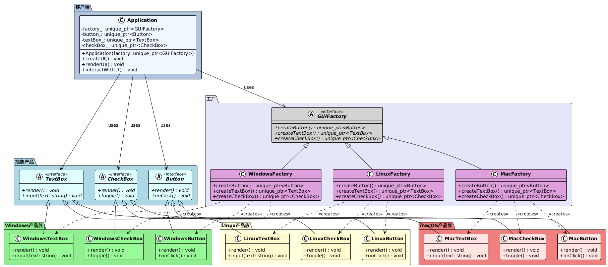
xxxxxxxxxx2451
5// 抽象产品：武器6class Weapon {7public:8 virtual void attack() = 0;9 virtual int getDamage() const = 0;10 virtual ~Weapon() = default;11};12
13// 抽象产品：护甲14class Armor {15public:16 virtual void defend() = 0;17 virtual int getDefense() const = 0;18 virtual ~Armor() = default;19};20
21// 抽象产品：饰品22class Accessory {23public:24 virtual void useSpecialAbility() = 0;25 virtual std::string getEffect() const = 0;26 virtual ~Accessory() = default;27};28
29// 战士装备族30class WarriorSword : public Weapon {31public:32 void attack() override {33 std::cout << "挥舞战士之剑进行强力攻击!" << std::endl;34 }35 36 int getDamage() const override { return 100; }37};38
39class WarriorArmor : public Armor {40public:41 void defend() override {42 std::cout << "战士重甲提供强大防护!" << std::endl;43 }44 45 int getDefense() const override { return 80; }46};47
48class WarriorShield : public Accessory {49public:50 void useSpecialAbility() override {51 std::cout << "举起盾牌，格挡敌人攻击!" << std::endl;52 }53 54 std::string getEffect() const override { return "格挡+50%"; }55};56
57// 法师装备族58class MageStaff : public Weapon {59public:60 void attack() override {61 std::cout << "挥舞法师法杖释放魔法攻击!" << std::endl;62 }63 64 int getDamage() const override { return 120; }65};66
67class MageRobe : public Armor {68public:69 void defend() override {70 std::cout << "法师长袍提供魔法防护!" << std::endl;71 }72 73 int getDefense() const override { return 40; }74};75
76class MageOrb : public Accessory {77public:78 void useSpecialAbility() override {79 std::cout << "魔法球增强法术威力!" << std::endl;80 }81 82 std::string getEffect() const override { return "魔法伤害+30%"; }83};84
85// 盗贼装备族86class RogueDagger : public Weapon {87public:88 void attack() override {89 std::cout << "使用盗贼匕首进行快速攻击!" << std::endl;90 }91 92 int getDamage() const override { return 80; }93};94
95class RogueLeather : public Armor {96public:97 void defend() override {98 std::cout << "盗贼皮甲提供灵活防护!" << std::endl;99 }100 101 int getDefense() const override { return 50; }102};103
104class RogueCloak : public Accessory {105public:106 void useSpecialAbility() override {107 std::cout << "隐身斗篷让你消失在阴影中!" << std::endl;108 }109 110 std::string getEffect() const override { return "隐身5秒"; }111};112
113// 抽象装备工厂114class EquipmentFactory {115public:116 virtual std::unique_ptr<Weapon> createWeapon() = 0;117 virtual std::unique_ptr<Armor> createArmor() = 0;118 virtual std::unique_ptr<Accessory> createAccessory() = 0;119 virtual std::string getClassName() const = 0;120 virtual ~EquipmentFactory() = default;121};122
123// 具体工厂：战士装备工厂124class WarriorEquipmentFactory : public EquipmentFactory {125public:126 std::unique_ptr<Weapon> createWeapon() override {127 return std::make_unique<WarriorSword>();128 }129 130 std::unique_ptr<Armor> createArmor() override {131 return std::make_unique<WarriorArmor>();132 }133 134 std::unique_ptr<Accessory> createAccessory() override {135 return std::make_unique<WarriorShield>();136 }137 138 std::string getClassName() const override { return "战士"; }139};140
141// 具体工厂：法师装备工厂142class MageEquipmentFactory : public EquipmentFactory {143public:144 std::unique_ptr<Weapon> createWeapon() override {145 return std::make_unique<MageStaff>();146 }147 148 std::unique_ptr<Armor> createArmor() override {149 return std::make_unique<MageRobe>();150 }151 152 std::unique_ptr<Accessory> createAccessory() override {153 return std::make_unique<MageOrb>();154 }155 156 std::string getClassName() const override { return "法师"; }157};158
159// 具体工厂：盗贼装备工厂160class RogueEquipmentFactory : public EquipmentFactory {161public:162 std::unique_ptr<Weapon> createWeapon() override {163 return std::make_unique<RogueDagger>();164 }165 166 std::unique_ptr<Armor> createArmor() override {167 return std::make_unique<RogueLeather>();168 }169 170 std::unique_ptr<Accessory> createAccessory() override {171 return std::make_unique<RogueCloak>();172 }173 174 std::string getClassName() const override { return "盗贼"; }175};176
177// 游戏角色类178class GameCharacter {179public:180 GameCharacter(std::unique_ptr<EquipmentFactory> factory)181 : factory_(std::move(factory)) {182 equipItems();183 }184 185 void equipItems() {186 weapon_ = factory_->createWeapon();187 armor_ = factory_->createArmor();188 accessory_ = factory_->createAccessory();189 190 std::cout << "=== " << factory_->getClassName() << "装备完成 ===" << std::endl;191 }192 193 void showStats() {194 std::cout << "职业: " << factory_->getClassName() << std::endl;195 std::cout << "攻击力: " << weapon_->getDamage() << std::endl;196 std::cout << "防御力: " << armor_->getDefense() << std::endl;197 std::cout << "特殊效果: " << accessory_->getEffect() << std::endl;198 }199 200 void performActions() {201 weapon_->attack();202 armor_->defend();203 accessory_->useSpecialAbility();204 }205 206private:207 std::unique_ptr<EquipmentFactory> factory_;208 std::unique_ptr<Weapon> weapon_;209 std::unique_ptr<Armor> armor_;210 std::unique_ptr<Accessory> accessory_;211};212
213// 角色创建器214class CharacterCreator {215public:216 static std::unique_ptr<EquipmentFactory> createEquipmentFactory(const std::string& characterClass) {217 if (characterClass == "Warrior") {218 return std::make_unique<WarriorEquipmentFactory>();219 } else if (characterClass == "Mage") {220 return std::make_unique<MageEquipmentFactory>();221 } else if (characterClass == "Rogue") {222 return std::make_unique<RogueEquipmentFactory>();223 }224 return nullptr;225 }226};227
228// 使用示例229int main() {230 std::vector<std::string> characterClasses = {"Warrior", "Mage", "Rogue"};231 232 for (const auto& characterClass : characterClasses) {233 auto factory = CharacterCreator::createEquipmentFactory(characterClass);234 if (factory) {235 GameCharacter character(std::move(factory));236 237 character.showStats();238 std::cout << "\n=== 战斗演示 ===" << std::endl;239 character.performActions();240 std::cout << "\n" << std::string(40, '-') << "\n" << std::endl;241 }242 }243 244 return 0;245}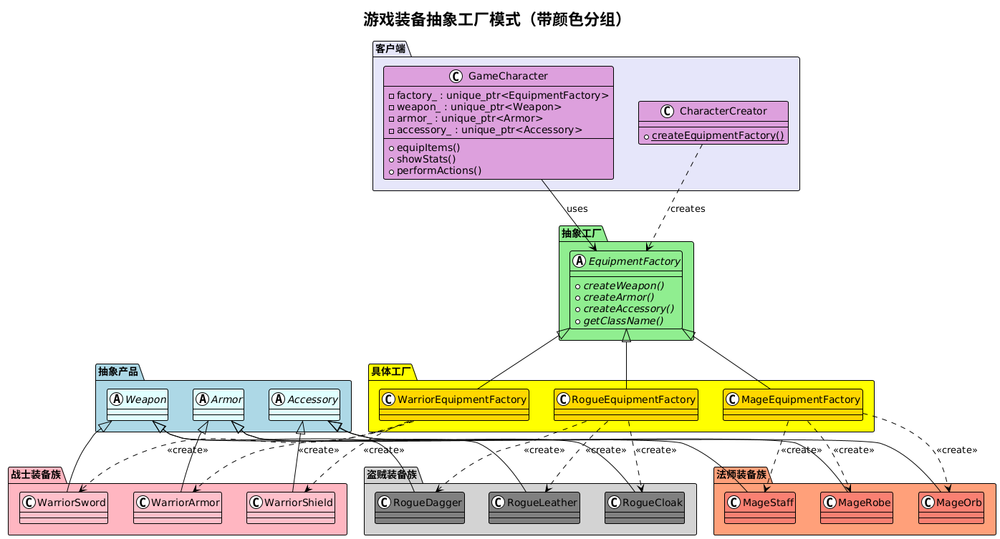
优点：
抽象工厂模式隔离了具体类的生成，使得客户端并不需要知道什么被创建。
当一个产品族中的多个对象被设计成一起工作时，它能够保证客户端始终只使用同一产品族中的对象；
增加新的产品族很方便（生成新的具体工厂），无需修改已有系统代码，符合开闭原则；
缺点： 增加新的产品等级结构很复杂，需要修改抽象工厂和所有的具体工厂类，对“开闭原则”的支持呈现倾斜性。
系统需要独立于产品的创建、组合和表示
系统需要由多个产品族中的一个来配置
需要强调一系列相关产品对象的设计以便进行联合使用
提供一个产品类库，只想显示接口而不是实现
| 特性 | 简单工厂 | 工厂方法 | 抽象工厂 |
|---|---|---|---|
| 产品数量 | 单一产品 | 单一产品 | 产品族（多个相关产品） |
| 工厂数量 | 一个工厂 | 多个工厂 | 多个工厂 |
| 工厂方法数量 | 一个方法 | 一个方法 | 多个方法 |
| 扩展性 | 违反开闭原则 | 符合开闭原则 | 符合开闭原则 |
| 复杂度 | 简单 | 中等 | 复杂 |
| 适用场景 | 产品种类少 | 产品种类多 | 产品族的创建 |
跨平台UI框架：不同操作系统的UI组件
数据库访问层：不同数据库的连接、命令、事务对象
游戏开发：不同职业的装备、技能、属性
主题系统：不同主题的颜色、字体、图标
文档处理：不同格式的解析器、生成器、验证器
抽象工厂模式是处理产品族创建的强大工具，它通过提供一系列相关产品的创建接口，确保了产品的一致性和系统的可扩展性。虽然它增加了系统的复杂度，但在需要管理多个相关产品族的场景下，抽象工厂模式能够提供清晰的架构和良好的可维护性。在实际应用中，合理地设计产品族和工厂层次结构是成功应用这一模式的关键。
观察者模式是一种行为型设计模式，它定义了对象之间的一对多依赖关系，当一个对象的状态发生改变时，所有依赖于它的对象都会得到通知并自动更新。
核心思想
发布-订阅机制：主题（Subject）维护一个观察者列表，状态改变时通知所有观察者
松耦合：主题和观察者之间通过抽象接口交互，降低耦合度
动态关系：观察者可以在运行时动态添加或移除
广播通信：一个主题可以同时通知多个观察者
结构组成
1. 抽象主题（Subject）
定义添加、删除和通知观察者的接口
2. 具体主题（ConcreteSubject）
实现抽象主题接口，维护观察者列表和状态
3. 抽象观察者（Observer）
定义更新接口，供主题通知时调用
4. 具体观察者（ConcreteObserver）
实现抽象观察者接口，定义具体的更新行为
xxxxxxxxxx931
6// 抽象观察者7class Observer {8public:9 virtual ~Observer() = default;10 virtual void update(const std::string& message) = 0;11};12
13// 抽象主题14class Subject {15public:16 virtual ~Subject() = default;17 virtual void attach(Observer* observer) = 0;18 virtual void detach(Observer* observer) = 0;19 virtual void notify() = 0;20};21
22// 具体主题 - 新闻发布者23class NewsPublisher : public Subject {24private:25 std::vector<Observer*> observers;26 std::string news;27 28public:29 void attach(Observer* observer) override {30 observers.push_back(observer);31 }32 33 void detach(Observer* observer) override {34 observers.erase(35 std::remove(observers.begin(), observers.end(), observer),36 observers.end()37 );38 }39 40 void notify() override {41 for (auto* observer : observers) {42 observer->update(news);43 }44 }45 46 void setNews(const std::string& newNews) {47 news = newNews;48 notify();49 }50 51 std::string getNews() const {52 return news;53 }54};55
56// 具体观察者 - 新闻订阅者57class NewsSubscriber : public Observer {58private:59 std::string name;60 61public:62 NewsSubscriber(const std::string& subscriberName) 63 : name(subscriberName) {}64 65 void update(const std::string& message) override {66 std::cout << "订阅者 " << name << " 收到新闻: " << message << std::endl;67 }68};69
70// 使用示例71int main() {72 NewsPublisher publisher;73 74 NewsSubscriber subscriber1("张三");75 NewsSubscriber subscriber2("李四");76 NewsSubscriber subscriber3("王五");77 78 // 订阅新闻79 publisher.attach(&subscriber1);80 publisher.attach(&subscriber2);81 publisher.attach(&subscriber3);82 83 // 发布新闻84 publisher.setNews("重大科技突破！");85 86 std::cout << "\n--- 李四取消订阅 ---\n" << std::endl;87 publisher.detach(&subscriber2);88 89 // 再次发布新闻90 publisher.setNews("经济形势分析报告发布");91 92 return 0;93}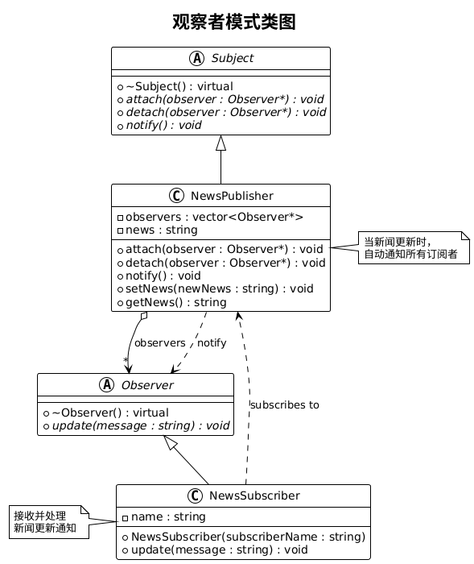
xxxxxxxxxx1771
7// 股票数据结构8struct StockData {9 std::string symbol;10 double price;11 double change;12 double changePercent;13 14 StockData(const std::string& sym, double p, double c, double cp)15 : symbol(sym), price(p), change(c), changePercent(cp) {}16};17
18// 抽象观察者19class StockObserver {20public:21 virtual ~StockObserver() = default;22 virtual void onPriceUpdate(const StockData& data) = 0;23 virtual std::string getName() const = 0;24};25
26// 抽象主题27class StockSubject {28public:29 virtual ~StockSubject() = default;30 virtual void subscribe(std::shared_ptr<StockObserver> observer) = 0;31 virtual void unsubscribe(std::shared_ptr<StockObserver> observer) = 0;32 virtual void notifyObservers(const StockData& data) = 0;33};34
35// 具体主题 - 股票市场36class StockMarket : public StockSubject {37private:38 std::vector<std::weak_ptr<StockObserver>> observers;39 std::unordered_map<std::string, StockData> stocks;40 41 void cleanupObservers() {42 observers.erase(43 std::remove_if(observers.begin(), observers.end(),44 [](const std::weak_ptr<StockObserver>& wp) {45 return wp.expired();46 }),47 observers.end()48 );49 }50 51public:52 void subscribe(std::shared_ptr<StockObserver> observer) override {53 observers.push_back(observer);54 }55 56 void unsubscribe(std::shared_ptr<StockObserver> observer) override {57 observers.erase(58 std::remove_if(observers.begin(), observers.end(),59 [&observer](const std::weak_ptr<StockObserver>& wp) {60 auto sp = wp.lock();61 return sp && sp == observer;62 }),63 observers.end()64 );65 }66 67 void notifyObservers(const StockData& data) override {68 cleanupObservers();69 for (auto& weakObserver : observers) {70 if (auto observer = weakObserver.lock()) {71 observer->onPriceUpdate(data);72 }73 }74 }75 76 void updateStock(const std::string& symbol, double newPrice) {77 double oldPrice = 0.0;78 if (stocks.find(symbol) != stocks.end()) {79 oldPrice = stocks[symbol].price;80 }81 82 double change = newPrice - oldPrice;83 double changePercent = oldPrice != 0 ? (change / oldPrice) * 100 : 0;84 85 StockData data(symbol, newPrice, change, changePercent);86 stocks[symbol] = data;87 88 notifyObservers(data);89 }90};91
92// 具体观察者 - 投资者93class Investor : public StockObserver {94private:95 std::string name;96 double alertThreshold;97 98public:99 Investor(const std::string& investorName, double threshold = 5.0)100 : name(investorName), alertThreshold(threshold) {}101 102 void onPriceUpdate(const StockData& data) override {103 std::cout << "投资者 " << name << " 收到 " << data.symbol 104 << " 价格更新: $" << data.price;105 106 if (std::abs(data.changePercent) >= alertThreshold) {107 std::cout << " [警告: 变动幅度 " << data.changePercent << "%]";108 }109 110 std::cout << std::endl;111 }112 113 std::string getName() const override {114 return name;115 }116};117
118// 具体观察者 - 交易系统119class TradingSystem : public StockObserver {120private:121 std::string systemName;122 123public:124 TradingSystem(const std::string& name) : systemName(name) {}125 126 void onPriceUpdate(const StockData& data) override {127 std::cout << "交易系统 " << systemName << " 处理 " << data.symbol128 << " 数据: 价格=$" << data.price 129 << ", 变动=$" << data.change130 << " (" << data.changePercent << "%)" << std::endl;131 132 // 模拟自动交易逻辑133 if (data.changePercent > 10) {134 std::cout << " -> 触发卖出信号" << std::endl;135 } else if (data.changePercent < -10) {136 std::cout << " -> 触发买入信号" << std::endl;137 }138 }139 140 std::string getName() const override {141 return systemName;142 }143};144
145// 使用示例146int main() {147 auto market = std::make_shared<StockMarket>();148 149 auto investor1 = std::make_shared<Investor>("张投资", 3.0);150 auto investor2 = std::make_shared<Investor>("李股民", 5.0);151 auto tradingSystem = std::make_shared<TradingSystem>("智能交易系统");152 153 // 订阅股票更新154 market->subscribe(investor1);155 market->subscribe(investor2);156 market->subscribe(tradingSystem);157 158 std::cout << "=== 股票价格更新 ===\n" << std::endl;159 160 // 模拟股票价格变化161 market->updateStock("AAPL", 150.00);162 std::cout << std::endl;163 164 market->updateStock("AAPL", 165.00); // 10% 涨幅165 std::cout << std::endl;166 167 market->updateStock("GOOGL", 2800.00);168 std::cout << std::endl;169 170 // 投资者1取消订阅171 std::cout << "--- 张投资取消订阅 ---\n" << std::endl;172 market->unsubscribe(investor1);173 174 market->updateStock("AAPL", 148.50); // 下跌175 176 return 0;177}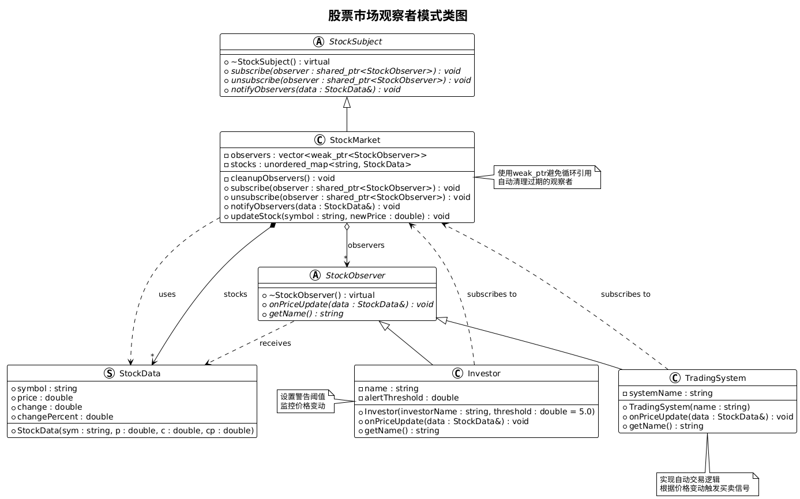
优点:
1、观察者和被观察者是抽象耦合的
2、建立一套触发机制。
缺点:
1、如果一个被观察者对象有很多的直接和间接的观察者的话，将所有的观察者都通知到会花费很多时间。
2、如果在观察者和观察目标之间有循环依赖的话，观察目标会触发它们之间进行循环调用，可能导致系统崩溃。
3、观察者模式没有相应的机制让观察者知道所观察的目标对象是怎么发生变化的，而仅仅只是知道观察目标发生了变化。
GUI事件处理：按钮点击、窗口事件等
模型-视图架构：MVC、MVP、MVVM模式
消息系统：发布-订阅消息队列
数据绑定：数据变化自动更新UI
监控系统：系统状态监控和告警
游戏开发：事件系统、状态变化通知
观察者模式是一种强大的行为型设计模式，它通过建立一对多的依赖关系，实现了对象间的松耦合通信。该模式在GUI编程、事件处理、数据绑定等场景中应用广泛，是现代软件架构中不可或缺的设计模式之一。正确使用观察者模式可以提高代码的可维护性和扩展性，但也需要注意性能和内存管理等问题。
职责链模式是一种行为型设计模式，它为请求创建了一个接收者对象的链。这种模式给予请求的类型，对请求的发送者和接收者进行解耦。在这种模式中，通常每个接收者都包含对另一个接收者的引用。如果一个对象不能处理该请求，那么它会把相同的请求传给下一个接收者，依此类推。
核心思想
请求传递：将请求沿着处理者链传递，直到有处理者能够处理它
动态组合：可以动态地组织和分配责任
发送者与接收者解耦：请求发送者不需要知道具体哪个对象会处理请求
责任分离：每个处理者只关注自己能处理的请求类型
结构组成
1. 抽象处理者（Handler）
定义处理请求的接口，包含指向下一个处理者的引用
2. 具体处理者（ConcreteHandler）
实现处理请求的具体逻辑，如果不能处理则传递给下一个处理者
3. 客户端（Client）
创建处理者链并发送请求
xxxxxxxxxx1671
5// 请假请求6struct LeaveRequest {7 std::string employeeName;8 int days;9 std::string reason;10 11 LeaveRequest(const std::string& name, int d, const std::string& r)12 : employeeName(name), days(d), reason(r) {}13};14
15// 抽象处理者16class LeaveHandler {17protected:18 std::shared_ptr<LeaveHandler> nextHandler;19 std::string handlerName;20 21public:22 LeaveHandler(const std::string& name) : handlerName(name) {}23 virtual ~LeaveHandler() = default;24 25 // 设置下一个处理者26 void setNext(std::shared_ptr<LeaveHandler> handler) {27 nextHandler = handler;28 }29 30 // 处理请求的模板方法31 void handleRequest(const LeaveRequest& request) {32 if (canHandle(request)) {33 processRequest(request);34 } else if (nextHandler) {35 std::cout << handlerName << " 无法处理，转交给下一级" << std::endl;36 nextHandler->handleRequest(request);37 } else {38 std::cout << "没有合适的处理者能够处理此请求" << std::endl;39 }40 }41 42protected:43 // 判断是否能处理请求44 virtual bool canHandle(const LeaveRequest& request) = 0;45 // 处理请求46 virtual void processRequest(const LeaveRequest& request) = 0;47};48
49// 具体处理者 - 组长50class TeamLeader : public LeaveHandler {51public:52 TeamLeader() : LeaveHandler("组长") {}53 54protected:55 bool canHandle(const LeaveRequest& request) override {56 return request.days <= 1;57 }58 59 void processRequest(const LeaveRequest& request) override {60 std::cout << handlerName << " 批准了 " << request.employeeName 61 << " 的 " << request.days << " 天请假申请";62 std::cout << " (原因: " << request.reason << ")" << std::endl;63 }64};65
66// 具体处理者 - 部门经理67class DepartmentManager : public LeaveHandler {68public:69 DepartmentManager() : LeaveHandler("部门经理") {}70 71protected:72 bool canHandle(const LeaveRequest& request) override {73 return request.days <= 3;74 }75 76 void processRequest(const LeaveRequest& request) override {77 std::cout << handlerName << " 批准了 " << request.employeeName 78 << " 的 " << request.days << " 天请假申请";79 std::cout << " (原因: " << request.reason << ")" << std::endl;80 }81};82
83// 具体处理者 - 总经理84class GeneralManager : public LeaveHandler {85public:86 GeneralManager() : LeaveHandler("总经理") {}87 88protected:89 bool canHandle(const LeaveRequest& request) override {90 return request.days <= 7;91 }92 93 void processRequest(const LeaveRequest& request) override {94 std::cout << handlerName << " 批准了 " << request.employeeName 95 << " 的 " << request.days << " 天请假申请";96 std::cout << " (原因: " << request.reason << ")" << std::endl;97 }98};99
100// 具体处理者 - 董事会101class Board : public LeaveHandler {102public:103 Board() : LeaveHandler("董事会") {}104 105protected:106 bool canHandle(const LeaveRequest& request) override {107 return request.days <= 30;108 }109 110 void processRequest(const LeaveRequest& request) override {111 if (request.days > 15) {112 std::cout << handlerName << " 需要特别审议 " << request.employeeName 113 << " 的 " << request.days << " 天长期请假申请" << std::endl;114 } else {115 std::cout << handlerName << " 批准了 " << request.employeeName 116 << " 的 " << request.days << " 天请假申请" << std::endl;117 }118 }119};120
121// 使用示例122int main() {123 // 创建处理者链124 auto teamLeader = std::make_shared<TeamLeader>();125 auto deptManager = std::make_shared<DepartmentManager>();126 auto generalManager = std::make_shared<GeneralManager>();127 auto board = std::make_shared<Board>();128 129 // 构建职责链130 teamLeader->setNext(deptManager);131 deptManager->setNext(generalManager);132 generalManager->setNext(board);133 134 // 测试不同的请假申请135 std::cout << "=== 请假审批系统 ===\n" << std::endl;136 137 LeaveRequest request1("张三", 1, "感冒发烧");138 std::cout << "处理请求: " << request1.employeeName << " 请假 " 139 << request1.days << " 天" << std::endl;140 teamLeader->handleRequest(request1);141 std::cout << std::endl;142 143 LeaveRequest request2("李四", 3, "家庭事务");144 std::cout << "处理请求: " << request2.employeeName << " 请假 " 145 << request2.days << " 天" << std::endl;146 teamLeader->handleRequest(request2);147 std::cout << std::endl;148 149 LeaveRequest request3("王五", 7, "结婚度蜜月");150 std::cout << "处理请求: " << request3.employeeName << " 请假 " 151 << request3.days << " 天" << std::endl;152 teamLeader->handleRequest(request3);153 std::cout << std::endl;154 155 LeaveRequest request4("赵六", 20, "出国深造");156 std::cout << "处理请求: " << request4.employeeName << " 请假 " 157 << request4.days << " 天" << std::endl;158 teamLeader->handleRequest(request4);159 std::cout << std::endl;160 161 LeaveRequest request5("钱七", 50, "长期病假");162 std::cout << "处理请求: " << request5.employeeName << " 请假 " 163 << request5.days << " 天" << std::endl;164 teamLeader->handleRequest(request5);165 166 return 0;167}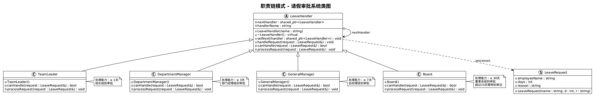
xxxxxxxxxx2391
9// 日志级别枚举10enum class LogLevel {11 DEBUG = 1,12 INFO = 2,13 WARNING = 3,14 ERROR = 4,15 FATAL = 516};17
18// 日志消息结构19struct LogMessage {20 LogLevel level;21 std::string message;22 std::string timestamp;23 std::string source;24 25 LogMessage(LogLevel lvl, const std::string& msg, const std::string& src = "")26 : level(lvl), message(msg), source(src) {27 // 生成时间戳28 auto now = std::time(nullptr);29 auto tm = *std::localtime(&now);30 std::ostringstream oss;31 oss << std::put_time(&tm, "%Y-%m-%d %H:%M:%S");32 timestamp = oss.str();33 }34};35
36// 抽象日志处理者37class LogHandler {38protected:39 std::shared_ptr<LogHandler> nextHandler;40 LogLevel handlerLevel;41 std::string handlerName;42 43public:44 LogHandler(LogLevel level, const std::string& name)45 : handlerLevel(level), handlerName(name) {}46 47 virtual ~LogHandler() = default;48 49 void setNext(std::shared_ptr<LogHandler> handler) {50 nextHandler = handler;51 }52 53 void handle(const LogMessage& message) {54 if (message.level >= handlerLevel) {55 writeLog(message);56 }57 58 if (nextHandler) {59 nextHandler->handle(message);60 }61 }62 63protected:64 virtual void writeLog(const LogMessage& message) = 0;65 66 std::string levelToString(LogLevel level) {67 switch (level) {68 case LogLevel::DEBUG: return "DEBUG";69 case LogLevel::INFO: return "INFO";70 case LogLevel::WARNING: return "WARNING";71 case LogLevel::ERROR: return "ERROR";72 case LogLevel::FATAL: return "FATAL";73 default: return "UNKNOWN";74 }75 }76};77
78// 控制台日志处理者79class ConsoleLogHandler : public LogHandler {80public:81 ConsoleLogHandler(LogLevel level = LogLevel::DEBUG)82 : LogHandler(level, "控制台处理器") {}83 84protected:85 void writeLog(const LogMessage& message) override {86 std::cout << "[" << handlerName << "] "87 << "[" << message.timestamp << "] "88 << "[" << levelToString(message.level) << "] ";89 90 if (!message.source.empty()) {91 std::cout << "[" << message.source << "] ";92 }93 94 std::cout << message.message << std::endl;95 }96};97
98// 文件日志处理者99class FileLogHandler : public LogHandler {100private:101 std::string filename;102 103public:104 FileLogHandler(LogLevel level, const std::string& file)105 : LogHandler(level, "文件处理器"), filename(file) {}106 107protected:108 void writeLog(const LogMessage& message) override {109 std::ofstream file(filename, std::ios::app);110 if (file.is_open()) {111 file << "[" << message.timestamp << "] "112 << "[" << levelToString(message.level) << "] ";113 114 if (!message.source.empty()) {115 file << "[" << message.source << "] ";116 }117 118 file << message.message << std::endl;119 file.close();120 }121 }122};123
124// 邮件日志处理者（模拟）125class EmailLogHandler : public LogHandler {126private:127 std::string emailAddress;128 129public:130 EmailLogHandler(LogLevel level, const std::string& email)131 : LogHandler(level, "邮件处理器"), emailAddress(email) {}132 133protected:134 void writeLog(const LogMessage& message) override {135 // 模拟发送邮件136 std::cout << "[" << handlerName << "] 发送邮件到: " << emailAddress << std::endl;137 std::cout << " 主题: 系统" << levelToString(message.level) << "级别日志" << std::endl;138 std::cout << " 内容: [" << message.timestamp << "] " << message.message << std::endl;139 std::cout << std::endl;140 }141};142
143// 数据库日志处理者（模拟）144class DatabaseLogHandler : public LogHandler {145private:146 std::string connectionString;147 148public:149 DatabaseLogHandler(LogLevel level, const std::string& connStr)150 : LogHandler(level, "数据库处理器"), connectionString(connStr) {}151 152protected:153 void writeLog(const LogMessage& message) override {154 // 模拟数据库插入155 std::cout << "[" << handlerName << "] 插入到数据库: " << connectionString << std::endl;156 std::cout << " INSERT INTO logs (timestamp, level, source, message) VALUES (\"" 157 << message.timestamp << "\", \"" << levelToString(message.level) 158 << "\", \"" << message.source << "\", \"" << message.message << "\")" << std::endl;159 std::cout << std::endl;160 }161};162
163// 日志管理器164class Logger {165private:166 std::shared_ptr<LogHandler> handlerChain;167 168public:169 void setHandlerChain(std::shared_ptr<LogHandler> chain) {170 handlerChain = chain;171 }172 173 void debug(const std::string& message, const std::string& source = "") {174 if (handlerChain) {175 handlerChain->handle(LogMessage(LogLevel::DEBUG, message, source));176 }177 }178 179 void info(const std::string& message, const std::string& source = "") {180 if (handlerChain) {181 handlerChain->handle(LogMessage(LogLevel::INFO, message, source));182 }183 }184 185 void warning(const std::string& message, const std::string& source = "") {186 if (handlerChain) {187 handlerChain->handle(LogMessage(LogLevel::WARNING, message, source));188 }189 }190 191 void error(const std::string& message, const std::string& source = "") {192 if (handlerChain) {193 handlerChain->handle(LogMessage(LogLevel::ERROR, message, source));194 }195 }196 197 void fatal(const std::string& message, const std::string& source = "") {198 if (handlerChain) {199 handlerChain->handle(LogMessage(LogLevel::FATAL, message, source));200 }201 }202};203
204// 使用示例205int main() {206 // 创建不同的日志处理者207 auto consoleHandler = std::make_shared<ConsoleLogHandler>(LogLevel::DEBUG);208 auto fileHandler = std::make_shared<FileLogHandler>(LogLevel::INFO, "app.log");209 auto emailHandler = std::make_shared<EmailLogHandler>(LogLevel::ERROR, "admin@company.com");210 auto dbHandler = std::make_shared<DatabaseLogHandler>(LogLevel::WARNING, "localhost:3306/logs");211 212 // 构建处理链213 consoleHandler->setNext(fileHandler);214 fileHandler->setNext(dbHandler);215 dbHandler->setNext(emailHandler);216 217 // 创建日志管理器218 Logger logger;219 logger.setHandlerChain(consoleHandler);220 221 std::cout << "=== 日志处理系统测试 ===\n" << std::endl;222 223 // 测试不同级别的日志224 logger.debug("调试信息：用户登录验证", "AuthService");225 std::cout << std::endl;226 227 logger.info("用户张三成功登录系统", "AuthService");228 std::cout << std::endl;229 230 logger.warning("数据库连接池使用率达到80%", "DatabasePool");231 std::cout << std::endl;232 233 logger.error("支付接口调用失败", "PaymentService");234 std::cout << std::endl;235 236 logger.fatal("系统内存不足，即将崩溃", "SystemMonitor");237 238 return 0;239}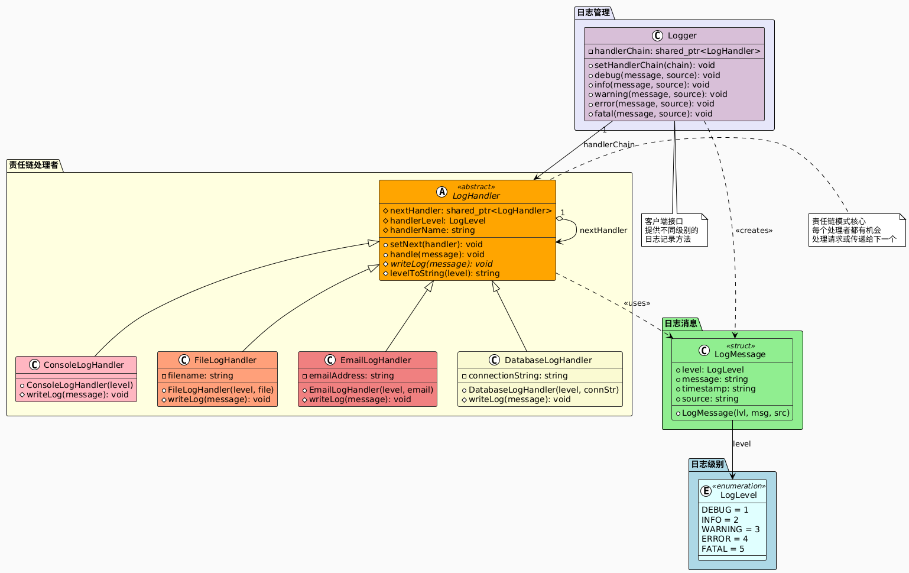
优点
解耦请求与处理: 发送者和处理者解耦，请求的发送者无需知道链的结构和具体处理者，只需将请求提交到链中。 示例：员工请假流程中，员工只需提交请假申请，无需关心审批链的具体节点（组长→经理→总监等）。
符合开闭原则: 可以动态添加、删除处理者，或调整处理顺序（灵活扩展处理链）。
符合单一职责原则：每个处理者专注于自己的职责（如校验、审批、计算等），职责清晰，代码可维护性高。
缺点
请求可能未被处理: 如果链中没有任何处理者能处理请求，且没有设置默认处理者（如链尾的 “兜底” 处理者），请求可能被忽略，导致隐性 bug。 解决方案：在链尾添加一个默认处理者（如 “无处理者” 提示）。
调试成本较高: 请求的传递路径是动态的，可能需要跟踪整个链的调用过程，尤其当链较长时，调试难度增加。 缓解方法：在处理者中添加日志记录，输出请求传递的节点信息。
性能可能受影响: 若链过长，请求需要遍历多个处理者，可能导致性能损耗（尤其是对实时性要求高的场景）。 适用场景：优先用于请求处理逻辑较简单、链长度可控的场景。
多个对象可以处理同一请求：但具体由哪个对象处理在运行时确定
不明确指定接收者：希望向多个对象中的一个提交请求
动态指定处理者集合：可处理请求的对象集合需要动态指定
审批流程：如请假审批、采购审批等
异常处理：不同级别的异常需要不同的处理方式
日志系统：不同级别的日志需要不同的输出方式
1. 纯职责链
每个处理者要么处理请求，要么传递给下一个处理者，不能同时进行
2. 不纯职责链
允许一个处理者处理请求后，仍然将请求传递给下一个处理者
3. 分支职责链
处理者可以根据条件选择不同的下一个处理者
职责链模式是一种强大的行为型设计模式，它通过将请求的发送者和接收者解耦，提供了一种灵活的请求处理机制。该模式特别适用于需要多级处理、审批流程、过滤器链等场景。虽然可能带来一定的性能开销，但其提供的灵活性和可扩展性使其在许多实际应用中都有重要价值。正确使用职责链模式可以使系统更加模块化、易于维护和扩展。
装饰器模式是一种结构型设计模式，它允许向一个现有的对象添加新的功能，同时又不改变其结构。这种类型的设计模式属于结构型模式，它是作为现有的类的一个包装。装饰器模式创建了一个装饰类，用来包装原有的类，并在保持类方法签名完整性的前提下，提供了额外的功能。
核心思想
动态扩展功能：在运行时动态地给对象添加额外的职责
替代继承：通过组合而非继承来扩展功能
透明性：装饰后的对象与原对象具有相同的接口
递归组合：可以用多个装饰器装饰同一个对象
结构组成
1. 抽象组件（Component）
定义一个对象接口，可以给这些对象动态地添加职责
2. 具体组件（ConcreteComponent）
实现抽象组件接口的具体对象
3. 抽象装饰器（Decorator）
维持一个指向组件对象的引用，并定义一个与组件接口一致的接口
4. 具体装饰器（ConcreteDecorator）
实现具体的装饰功能，给组件添加职责
xxxxxxxxxx1381
5// 抽象组件 - 饮料接口6class Beverage {7public:8 virtual ~Beverage() = default;9 virtual std::string getDescription() const = 0;10 virtual double getCost() const = 0;11};12
13// 具体组件 - 浓缩咖啡14class Espresso : public Beverage {15public:16 std::string getDescription() const override {17 return "浓缩咖啡";18 }19 20 double getCost() const override {21 return 1.99;22 }23};24
25// 具体组件 - 深度烘焙咖啡26class DarkRoast : public Beverage {27public:28 std::string getDescription() const override {29 return "深度烘焙咖啡";30 }31 32 double getCost() const override {33 return 0.99;34 }35};36
37// 具体组件 - 脱咖啡因咖啡38class Decaf : public Beverage {39public:40 std::string getDescription() const override {41 return "脱咖啡因咖啡";42 }43 44 double getCost() const override {45 return 1.05;46 }47};48
49// 抽象装饰器50class CondimentDecorator : public Beverage {51protected:52 std::shared_ptr<Beverage> beverage;53 54public:55 CondimentDecorator(std::shared_ptr<Beverage> bev) : beverage(bev) {}56 virtual ~CondimentDecorator() = default;57};58
59// 具体装饰器 - 牛奶60class Milk : public CondimentDecorator {61public:62 Milk(std::shared_ptr<Beverage> bev) : CondimentDecorator(bev) {}63 64 std::string getDescription() const override {65 return beverage->getDescription() + ", 牛奶";66 }67 68 double getCost() const override {69 return beverage->getCost() + 0.10;70 }71};72
73// 具体装饰器 - 豆浆74class Soy : public CondimentDecorator {75public:76 Soy(std::shared_ptr<Beverage> bev) : CondimentDecorator(bev) {}77 78 std::string getDescription() const override {79 return beverage->getDescription() + ", 豆浆";80 }81 82 double getCost() const override {83 return beverage->getCost() + 0.15;84 }85};86
87// 具体装饰器 - 摩卡88class Mocha : public CondimentDecorator {89public:90 Mocha(std::shared_ptr<Beverage> bev) : CondimentDecorator(bev) {}91 92 std::string getDescription() const override {93 return beverage->getDescription() + ", 摩卡";94 }95 96 double getCost() const override {97 return beverage->getCost() + 0.20;98 }99};100
101// 具体装饰器 - 奶泡102class Whip : public CondimentDecorator {103public:104 Whip(std::shared_ptr<Beverage> bev) : CondimentDecorator(bev) {}105 106 std::string getDescription() const override {107 return beverage->getDescription() + ", 奶泡";108 }109 110 double getCost() const override {111 return beverage->getCost() + 0.10;112 }113};114
115// 使用示例116int main() {117 std::cout << "=== 星巴克咖啡订购系统 ===\n" << std::endl;118 119 // 订购一杯浓缩咖啡120 auto beverage1 = std::make_shared<Espresso>();121 std::cout << beverage1->getDescription() << " $" << beverage1->getCost() << std::endl;122 123 // 订购一杯深度烘焙咖啡，加双倍摩卡，加奶泡124 auto beverage2 = std::make_shared<DarkRoast>();125 beverage2 = std::make_shared<Mocha>(beverage2);126 beverage2 = std::make_shared<Mocha>(beverage2);127 beverage2 = std::make_shared<Whip>(beverage2);128 std::cout << beverage2->getDescription() << " $" << beverage2->getCost() << std::endl;129 130 // 订购一杯脱咖啡因咖啡，加豆浆，加摩卡，加奶泡131 auto beverage3 = std::make_shared<Decaf>();132 beverage3 = std::make_shared<Soy>(beverage3);133 beverage3 = std::make_shared<Mocha>(beverage3);134 beverage3 = std::make_shared<Whip>(beverage3);135 std::cout << beverage3->getDescription() << " $" << beverage3->getCost() << std::endl;136 137 return 0;138}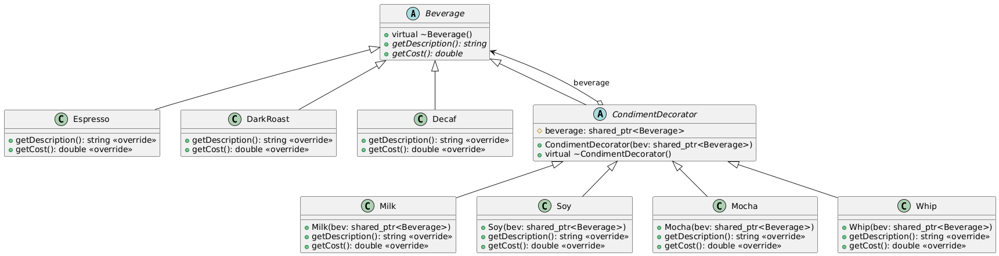
xxxxxxxxxx2661
7// 抽象组件 - 文本处理器接口8class TextProcessor {9public:10 virtual ~TextProcessor() = default;11 virtual std::string process(const std::string& text) const = 0;12 virtual std::string getDescription() const = 0;13};14
15// 具体组件 - 基础文本处理器16class BasicTextProcessor : public TextProcessor {17public:18 std::string process(const std::string& text) const override {19 return text;20 }21 22 std::string getDescription() const override {23 return "基础文本";24 }25};26
27// 抽象装饰器28class TextDecorator : public TextProcessor {29protected:30 std::shared_ptr<TextProcessor> processor;31 32public:33 TextDecorator(std::shared_ptr<TextProcessor> proc) : processor(proc) {}34 virtual ~TextDecorator() = default;35};36
37// 具体装饰器 - 大写转换38class UpperCaseDecorator : public TextDecorator {39public:40 UpperCaseDecorator(std::shared_ptr<TextProcessor> proc) : TextDecorator(proc) {}41 42 std::string process(const std::string& text) const override {43 std::string processed = processor->process(text);44 std::transform(processed.begin(), processed.end(), processed.begin(), ::toupper);45 return processed;46 }47 48 std::string getDescription() const override {49 return processor->getDescription() + " -> 大写转换";50 }51};52
53// 具体装饰器 - 加密54class EncryptionDecorator : public TextDecorator {55private:56 int shift;57 58public:59 EncryptionDecorator(std::shared_ptr<TextProcessor> proc, int s = 3) 60 : TextDecorator(proc), shift(s) {}61 62 std::string process(const std::string& text) const override {63 std::string processed = processor->process(text);64 std::string encrypted;65 66 for (char c : processed) {67 if (std::isalpha(c)) {68 char base = std::isupper(c) ? 'A' : 'a';69 encrypted += static_cast<char>((c - base + shift) % 26 + base);70 } else {71 encrypted += c;72 }73 }74 75 return encrypted;76 }77 78 std::string getDescription() const override {79 return processor->getDescription() + " -> 凯撒加密(偏移" + std::to_string(shift) + ")";80 }81};82
83// 具体装饰器 - 压缩（模拟）84class CompressionDecorator : public TextDecorator {85public:86 CompressionDecorator(std::shared_ptr<TextProcessor> proc) : TextDecorator(proc) {}87 88 std::string process(const std::string& text) const override {89 std::string processed = processor->process(text);90 91 // 简单的压缩模拟：移除多余空格92 std::string compressed;93 bool lastWasSpace = false;94 95 for (char c : processed) {96 if (c == ' ') {97 if (!lastWasSpace) {98 compressed += c;99 lastWasSpace = true;100 }101 } else {102 compressed += c;103 lastWasSpace = false;104 }105 }106 107 return compressed;108 }109 110 std::string getDescription() const override {111 return processor->getDescription() + " -> 压缩";112 }113};114
115// 具体装饰器 - Base64编码（简化版）116class Base64Decorator : public TextDecorator {117public:118 Base64Decorator(std::shared_ptr<TextProcessor> proc) : TextDecorator(proc) {}119 120 std::string process(const std::string& text) const override {121 std::string processed = processor->process(text);122 123 // 简化的Base64编码模拟124 std::string encoded;125 for (size_t i = 0; i < processed.length(); ++i) {126 encoded += std::to_string(static_cast<int>(processed[i]));127 if (i < processed.length() - 1) {128 encoded += "-";129 }130 }131 132 return "[BASE64:" + encoded + "]";133 }134 135 std::string getDescription() const override {136 return processor->getDescription() + " -> Base64编码";137 }138};139
140// 具体装饰器 - 添加时间戳141class TimestampDecorator : public TextDecorator {142public:143 TimestampDecorator(std::shared_ptr<TextProcessor> proc) : TextDecorator(proc) {}144 145 std::string process(const std::string& text) const override {146 std::string processed = processor->process(text);147 148 // 添加简单时间戳149 auto now = std::time(nullptr);150 return "[" + std::to_string(now) + "] " + processed;151 }152 153 std::string getDescription() const override {154 return processor->getDescription() + " -> 添加时间戳";155 }156};157
158// 具体装饰器 - HTML格式化159class HtmlDecorator : public TextDecorator {160private:161 std::string tag;162 163public:164 HtmlDecorator(std::shared_ptr<TextProcessor> proc, const std::string& htmlTag = "p") 165 : TextDecorator(proc), tag(htmlTag) {}166 167 std::string process(const std::string& text) const override {168 std::string processed = processor->process(text);169 return "<" + tag + ">" + processed + "</" + tag + ">";170 }171 172 std::string getDescription() const override {173 return processor->getDescription() + " -> HTML格式化(" + tag + ")";174 }175};176
177// 文本处理管道类178class TextProcessingPipeline {179private:180 std::shared_ptr<TextProcessor> processor;181 182public:183 TextProcessingPipeline() {184 processor = std::make_shared<BasicTextProcessor>();185 }186 187 TextProcessingPipeline& addUpperCase() {188 processor = std::make_shared<UpperCaseDecorator>(processor);189 return *this;190 }191 192 TextProcessingPipeline& addEncryption(int shift = 3) {193 processor = std::make_shared<EncryptionDecorator>(processor, shift);194 return *this;195 }196 197 TextProcessingPipeline& addCompression() {198 processor = std::make_shared<CompressionDecorator>(processor);199 return *this;200 }201 202 TextProcessingPipeline& addBase64() {203 processor = std::make_shared<Base64Decorator>(processor);204 return *this;205 }206 207 TextProcessingPipeline& addTimestamp() {208 processor = std::make_shared<TimestampDecorator>(processor);209 return *this;210 }211 212 TextProcessingPipeline& addHtml(const std::string& tag = "p") {213 processor = std::make_shared<HtmlDecorator>(processor, tag);214 return *this;215 }216 217 std::string process(const std::string& text) const {218 return processor->process(text);219 }220 221 std::string getDescription() const {222 return processor->getDescription();223 }224};225
226// 使用示例227int main() {228 std::cout << "=== 文本处理装饰器系统 ===\n" << std::endl;229 230 std::string originalText = "Hello World! This is a test message.";231 std::cout << "原始文本: \"" << originalText << "\"\n" << std::endl;232 233 // 示例1：基础处理234 TextProcessingPipeline pipeline1;235 std::cout << "处理管道1: " << pipeline1.getDescription() << std::endl;236 std::cout << "结果: \"" << pipeline1.process(originalText) << "\"\n" << std::endl;237 238 // 示例2：大写转换 + 压缩239 TextProcessingPipeline pipeline2;240 pipeline2.addUpperCase().addCompression();241 std::cout << "处理管道2: " << pipeline2.getDescription() << std::endl;242 std::cout << "结果: \"" << pipeline2.process(originalText) << "\"\n" << std::endl;243 244 // 示例3：压缩 + 大写 + 加密245 TextProcessingPipeline pipeline3;246 pipeline3.addCompression().addUpperCase().addEncryption(5);247 std::cout << "处理管道3: " << pipeline3.getDescription() << std::endl;248 std::cout << "结果: \"" << pipeline3.process(originalText) << "\"\n" << std::endl;249 250 // 示例4：完整处理链251 TextProcessingPipeline pipeline4;252 pipeline4.addCompression()253 .addUpperCase()254 .addTimestamp()255 .addHtml("h1");256 std::cout << "处理管道4: " << pipeline4.getDescription() << std::endl;257 std::cout << "结果: \"" << pipeline4.process(originalText) << "\"\n" << std::endl;258 259 // 示例5：Base64编码链260 TextProcessingPipeline pipeline5;261 pipeline5.addCompression().addBase64();262 std::cout << "处理管道5: " << pipeline5.getDescription() << std::endl;263 std::cout << "结果: \"" << pipeline5.process(originalText) << "\"" << std::endl;264 265 return 0;266}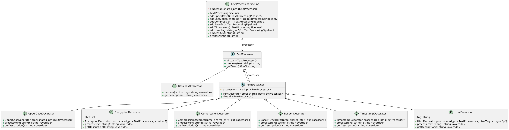
优点
灵活性高：装饰器模式提供了比继承更灵活的扩展方式。继承是静态的，在编译时就确定了类的功能，而装饰器模式可以在运行时动态地为对象添加或移除功能。
可维护性好：通过将不同的功能封装在不同的装饰器类中，使得代码的结构更加清晰，每个装饰器类只负责单一的功能，便于维护和修改。
复用性强：装饰器类可以被多个对象复用，不同的装饰器还可以进行组合，以实现不同的功能组合。
遵循开闭原则：对扩展开放，对修改关闭。可以在不修改现有代码的情况下，通过添加新的装饰器类来扩展系统的功能。
缺点
产生过多小对象：使用装饰器模式会产生许多小对象，每个装饰器都是一个独立的类，这会增加系统的复杂性和理解难度。
调试困难：由于装饰器的嵌套使用，可能会导致调试时难以跟踪对象的行为，特别是当装饰器链较长时。
动态添加功能：需要在不修改现有代码的情况下扩展对象功能
功能组合：需要将多个功能进行组合使用
避免继承爆炸：当用继承扩展功能会导致子类数量急剧增加时
临时功能：需要临时给对象添加一些功能
插件系统：实现可插拔的功能模块
数据处理管道：构建数据处理的流水线
1. 透明装饰器
装饰器和组件实现相同的接口
2. 半透明装饰器
装饰器除了实现组件接口外，还可以定义新的方法
3. 函数式装饰器
使用函数而非类来实现装饰功能
装饰器模式是一种强大的结构型设计模式，它提供了一种灵活的方式来扩展对象的功能，而无需修改其结构。该模式特别适用于需要动态添加功能、避免继承爆炸、构建处理管道等场景。虽然可能增加系统复杂性，但其提供的灵活性和可组合性使其在许多实际应用中都有重要价值。正确使用装饰器模式可以使系统更加模块化、易于扩展和维护。